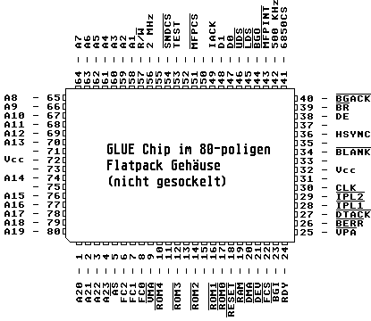

Previous
Next
TOC

Die Beschriftung des GLUE Chips lautet:
C070714-xx
für die quadratische Ausführung des Herstellers IMP
C025915-xx
für die quadratische Ausführung von Atari
C101602-xx
für die 80-polige SMD-Version im Flatpackgehäuse
Zur Softwareinstallation muß das Treiberprogramm MAGNUM.PRG in den
Autoordner des Bootlaufwerkes kopiert werden. Das Treiberprogramm
sollte möglichst zuerst ausgeführt werden, damit die Speicheranfor-
derungen der nachfolgenden Programme aus dem Fast-RAM bedient wer-
den können. Wenn Sie eine Magnumkarte mit einem 16MB SIMM Modul
ausgerüstet haben, sollten Sie das Programm HIMEM.PRG als erstes
Programm in den Autoordner kopieren und das Magnum Treiberprogramm
als letztes. Somit werden die Anforderungen der Autoordnerprogramme
die zwischen den beiden Treiberprogrammen gestartet werden, aus den
beiden 512KB großen Upper Memory Blöcken (UMBs) bedient und das
restliche Fast-RAM steht als ein großer Block zur Verfügung.
Konformität mit anderen Hardwareerweiterungen
Läuft problemlos mit der ET4000-Grafikkarte Crazy-Dots 1 von TKR
MidiCom-Romporthardware
Hard+Soft Tos 2.06 AT-Bus Karte
HBS640 T28 Beschleunigerkarte
Beim Einbau in eine STACY muß das interne Schaltnetzteil mittels
durch Draht (Flachbandkabel) in das Batteriefach verlagert werden!
Seit Oktober 1997 gibt es die Magnum auch für die MegaSTE Computer,
diese wird in den Prozessorsockel gesteckt und arbeitet aufgrund des
schnelleren Prozessors dann mit 16 MHz beim Speicherzugriff.
Eine Karte für den 1040STE ist nicht geplant und die MegaSTE Version
wird nicht im 1040STE funktionieren.
weiterblättern
Kapitel Die MagnumST Karte für alle ST Computer, Seite 3